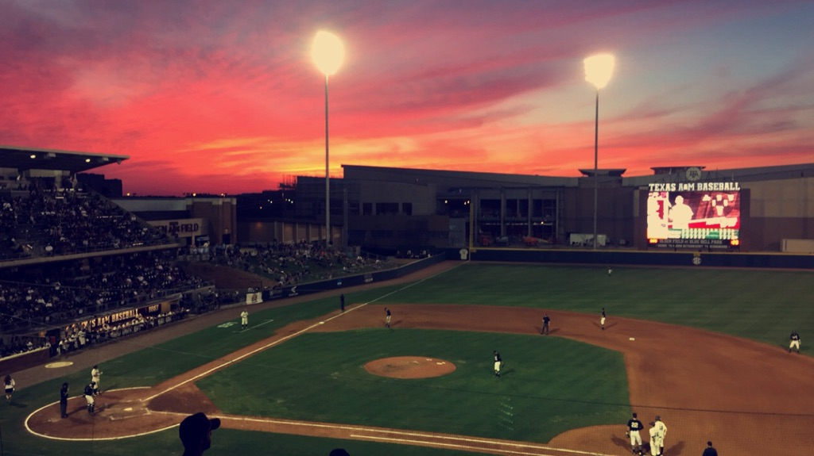
In the past, baseball would not have interested me that much, be it professional or college. Needless to say, just like anyone else my interests have shifted over time. I would like to attribute it to a growing number of factors, from having a committee member who loves baseball to an old roommate writing for the Astros blog (SB Nation’s Crawfish boxes, check out his posts especially if you are a fan that belongs to the AL West). Oh yeah, sadly there is a Yankee’s fan that’s in the mix as well. Luckily, I won’t ever considering cheering for any other team but my beloved Texas Rangers. It also helps to keep up with baseball, when your team is constantly ranked in the Top 25. Gig’Em Ags!
A few months ago, during my job hunt I decided to try my luck and apply for a few sports analytics jobs. I never thought I would get a call back, especially from baseball teams. But I did, and I must say the experience was fantastic. Thanks to that I have decided to share with y’all some projects that I undertake. If you think there are any in particular that might interest me, please do share.
If any of you have kept up with college baseball this year, then you have definitely heard a lot about SEC and ACC teams, specifically Texas A&M. The Texas A&M baseball coach, Rob Childress is known for having quality-pitching staffs. Interestingly enough this year it is the Texas A&M offense that has carried the team. The most recent 22-run game against Wake Forest in the regional’s reminded us of the ridiculous offensive prowess that the Aggies possess. Of course, South Carolina reminded everyone that they were just as offensively talented that weekend by putting 23 runs against Rhode Island. Why don’t we take a look at the stats? For those of you curious on how I got a hold of the stats, I have a link to my github repository at the bottom of this page.
Plate Discipline
A great hitting team will usually display great plate discipline. There are a host of statistics that can determine plate discipline, but we are limited to the stats recorded by the NCAA. So for this, we will look at strikeout rate (K%) and walk rate (BB%). A higher walk-rate results in the batter reaching base more often. It is a little bit more difficult to gather information from strikeout rate alone. It does however give you some insight on the batter’s ability to make contact. The combination of a high walk-rate and low strike rate suggests that the batter is quite good at determining pitch locations and usually gets contact.
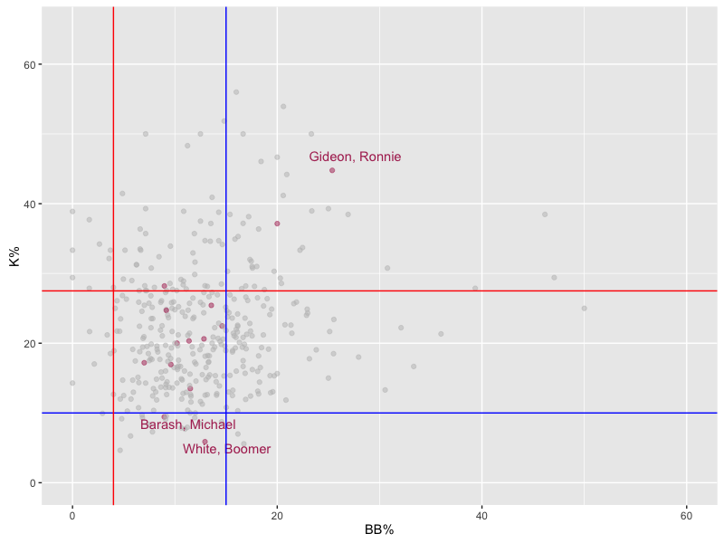
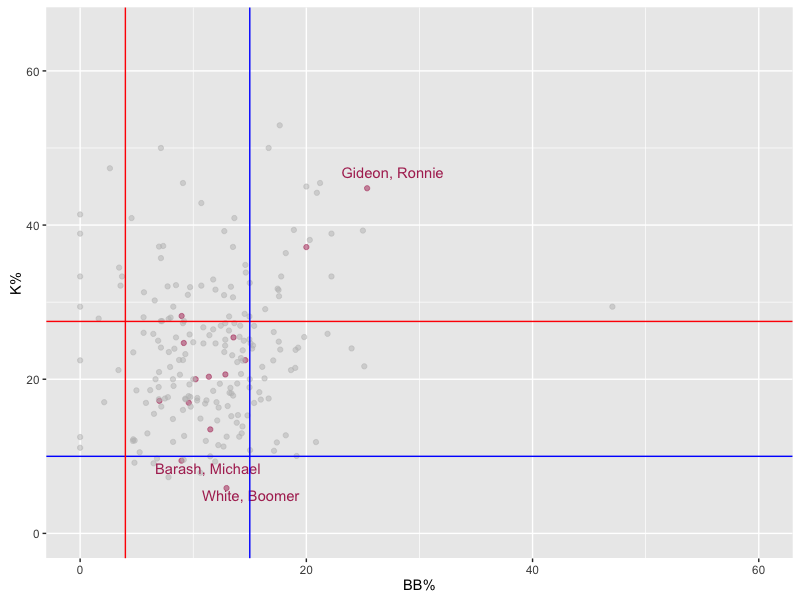
Now let’s take a look at two plots, the first plot contains data for players that belong to Top 25 teams (as of the last rankings) and the second plot contains data for only SEC players. The blue lines represent an excellent rating for K% and BB%, a player above the blue line for BB% is deemed excellent while a player below the blue line for K% is also deemed excellent. The red lines depict a poor rating.
It is immediately clear that Boomer White and Michael Barash have good plate discipline. This is kind of expected of White, seeing as he won numerous awards. White was the SEC player of the year, a first team All-American, and a semi-finalist for the Golden Spikes award. Barash is a bit more surprising as he was never in the top of the order, and he only had a 0.330 BA, and 0.390 OBP. (For reference White has a 0.392 BA and a 0.468 OBP)
Run Production
Offensive powerhouses are usually not one-dimensional. Instead they tend to score runs by knocking it out of the park, as well as bringing in runs via stolen bases and sacrifice hits.
In the following plots, the x-axis represents the number of home runs a team has hit, while the y-axis is a summation of the sacrifice hits and stolen bases. The black, blue and orange lines represent the national, SEC, and Top 25 averages, respectively. The first plot shows all teams in Division I baseball, while the second plot only considers SEC and Top 25 teams.
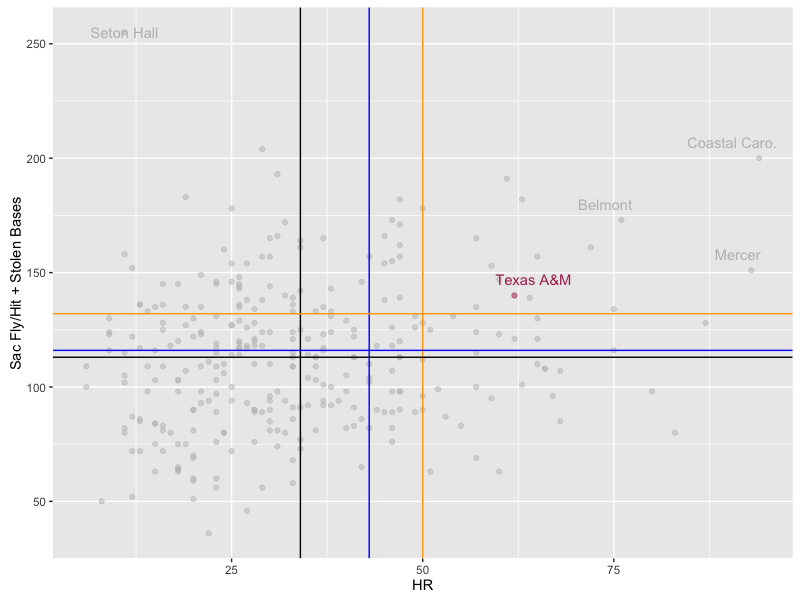
Teams in the upper right hand region (all points above the intersection of the orange lines) are quality offensive teams. Texas A&M once again distinguishes itself from the pack. Interestingly enough, Coastal Carolina does well in both categories. This might stem from Coastal Carolina allegiance to a non-power 5 conference. But that idea was immediately dispelled with their whopping of LSU and advancement to the CWS.
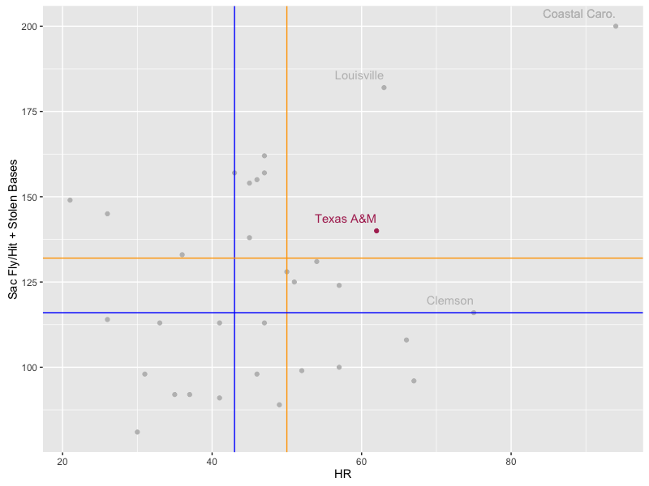
Even though throughout the year 1/3 of the Top 25 poll consisted of SEC teams, it was not because of offense. In fact, Texas A&M is the only SEC team to be above average in both categories. Louisville and its star-studded lineup seems to have performed much better in the Sac Fly/Bunt and Stolen bases category in comparison to hitting home runs. (Note however that both were above average.)
Sabermetrics
Since Bill James book in 1980, the Majors has adopted various sabermetrics to further assess players. NCAA does not track such data for a variety of reasons from being a college league to not having funding. I do however think it would be possible, they could hire college students to keep track of some of the more advanced statistics for really cheap at each university. There are a few offensive sabermetrics that can be calculated with the available stats provided by the NCAA.
The first metric to look at is wOBA (weighted On-Base Average), it is an all inclusive offensive statistic. This metric determines a hitter’s offensive value by placing relative weights on different offensive events. The formula for wOBA is:
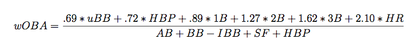
The results for wOBA were plotted against AB and can be seen below. The black line denotes the national average wOBA.
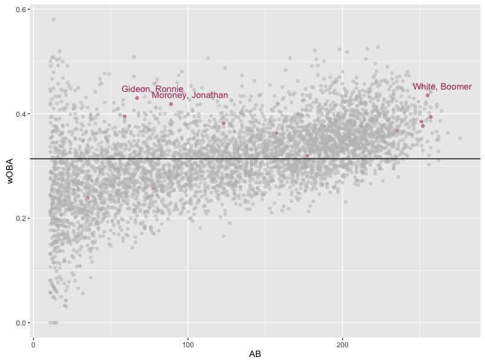
Texas A&M players with an wOBA over 0.4 were highlighted above. Those of you who watched Aggie baseball know that that Moroney did not get hot until the SEC tournament and onwards. The majority of Aggies are above the wOBA average, and once again Boomer White distinguishes himself from the pack.
A more visual approach to wOBA would be to breakdown the percentage of hit types per player or team. A pie chart is used to compare the NCAA average, SEC average, Top 25 average and Texas A&M’s distribution of hits.
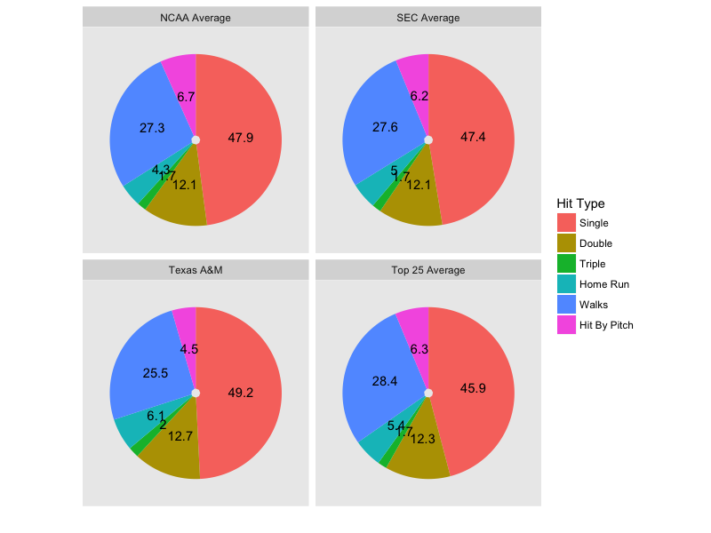
Interestingly enough, the Aggies have higher percentages in all hit types, with the exception of walks and hit by pitch. This also helps explain why the majority of Aggies have a low walk percentage (as seen in the plate discipline plots). Seeing as the Aggies have a high percentage of singles comparatively, they should have a high BABIP (Batting Average on Balls In Play).
{: .center} 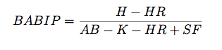
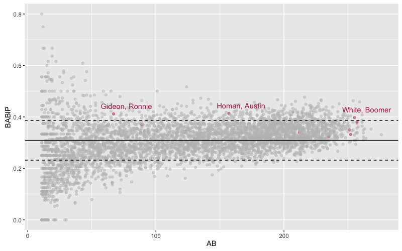
The dashed lines represent one standard deviation above and below the national average. Most Aggie’s are within one standard deviation above the national average. The truly great hitters are usually above the national average by a whole standard deviation. Only three Aggie hitters are above this mark: Ronnie Gideon, Austin Homan and Boomer White. We have been over the Gideon case, where he had defensive deficiencies and was continuously inconsistent offensively. Austin Homan is quite a surprise, but looking at his stat line puts this in perspective. Homan hit 1 HR all year, brought in 26 RBIs and 56 hits. It seems that he was quite adept at getting on base and putting balls in play. Of course, White shows up once again further solidifying his offensive prowess.
In the following tables, we have summarized some statistics. The most recent addition is the wRAA. wRAA is the weighted runs above average, it measures the number of offensive runs a player contributes to their team compared to the average player. The equation to find wRAA is:
{: .center} 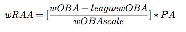
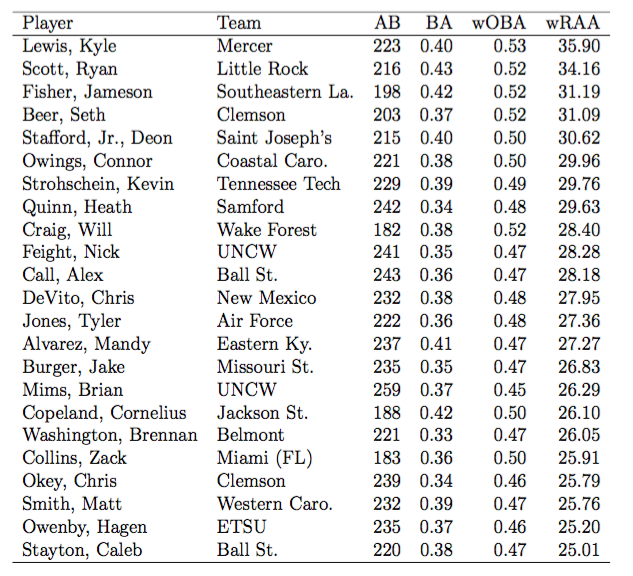
The first table highlights all players who have above a 25 wRAA, considered to be way above average for collegiate players and anything about 32 or so should be considered elite (for the majors, anything about 40 is considered elite). Even though the BA is sporadic, the wOBA highlights the similarity between these players (all above 0.450). Note the league average was calculated as a conference average, this allows for a better comparison between their counterparts. This does introduce some contention, instead of using the national average, the league average will lead to highlighting big name players in smaller conferences and ignoring big name players in big conferences. Those with lesser competition will all of a sudden be seen as better players. Seth Beer from Clemson, the freshman freak seems to be incredibly valuable. This should bolster his status for the Golden Spikes award.
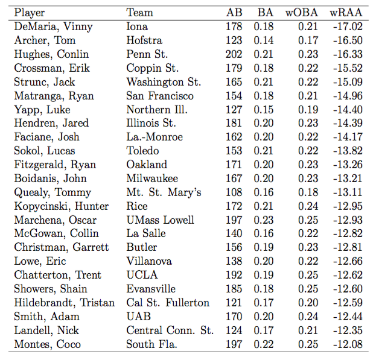
The second table shows the most horrendous offensive players. Notice also that they have a high number of ABs, these players must have provided great defense or a limited depth must have kept them in the lineup. Just poor numbers in general.
From the looks of the data, it seems that Texas A&M was indeed well above average offensively. To claim them an offensive powerhouse is a bit of a stretch, they were above average normally but at no point were they dominating a statistics (example: Coastal Carolina).
Also, from all of this it seems to make sense as to why so many accolades fell to Boomer White. A player to watch for the future? Seth Beer (This kid is a monster and will probably tear up the collegiate ranks next year. I would be weary of Clemson).
MLB Draft
Since the MLB draft was recently (June 9-11), it seems fitting to look at some basic stats.
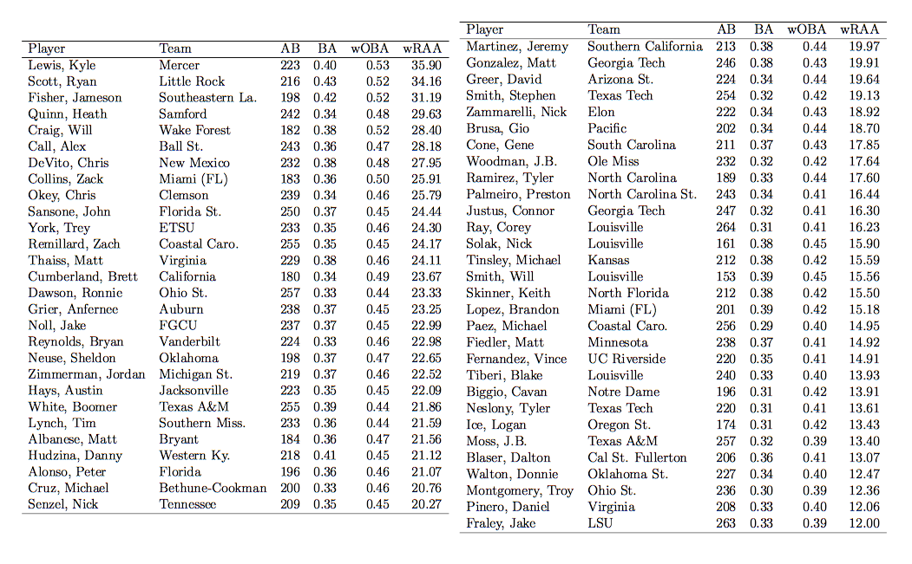
In general the players drafted to the MLB have seen significant AB’s have above a 0.4 wOBA and are above average in terms of runs provided to their team (wRAA).
Lastly, we can also see the BABIP for those drafted to the MLB. It is actually interesting to see how a lot of players in fact fall below one standard deviation from the mean. It doesn’t deem a player a horrible hitter, but he may not be as adept at putting balls in play.
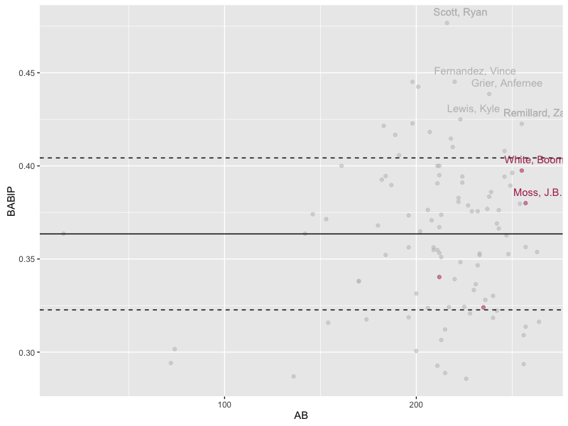
Kyle Lewis and Ryan Scott seem to be fantastic pickups by Seattle and Boston. Ryan Scott was picked up in the 7th round, could be a steal there. Lewis was a first rounder, so there are some expectations there.
I just want to give Nathan a shout out for looking over my grammar, Thanks!